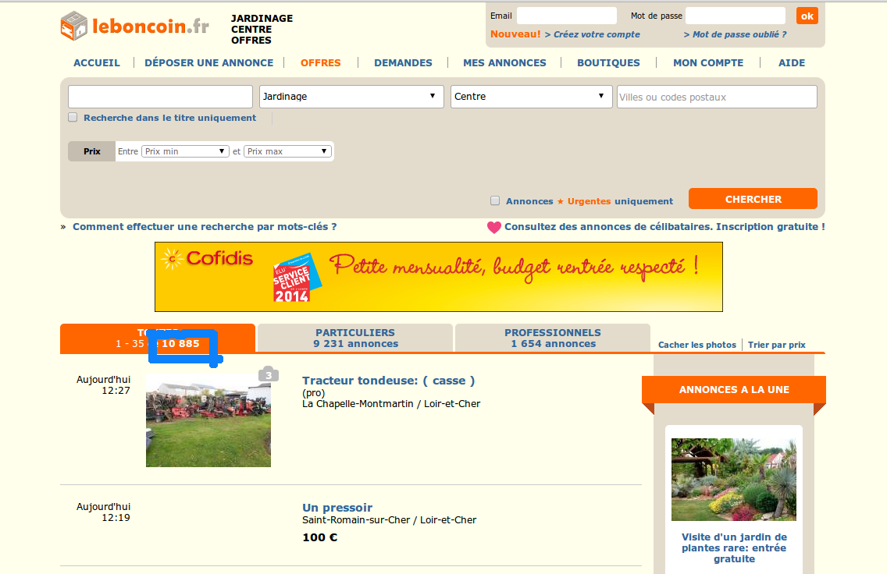
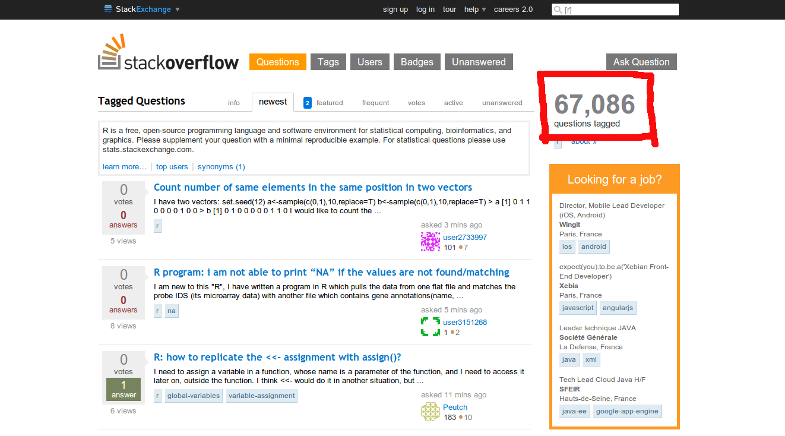

Master IM, Paris 5 @comeetie
Master IM, Paris 5 @comeetie
<!DOCTYPE html>
<head><meta charset="utf-8"></head>
<body>
<section style="padding-top:6em;text-align:center">
<h1 class="purple"> Scrapping </h1>
<h4 class="purple">Extraire des informations spécifiques</h4>
<h4 class="purple">d'une ou plusieurs pages web</h4>
<h4 class="purple">en vu de constituer un jeu de données</h4>
</section>
</body>
</html>
library(RCurl)
# récupérer la page
res = getURL("http://www.leboncoin.fr/jardinage/offres/centre/")
# parse du html
resp = htmlTreeParse(res,useInternal=T)
# fonction de haut niveau pour récupérer les tableaux
rest = readHTMLTable(resp)
# récupérer un noeud désiré (xpath)
node = getNodeSet(resp, '//nav/ul/')
| Expression | Description |
|---|---|
| nodename | Selects all nodes with the name "nodename" |
| / | Selects from the root node |
| // | Selects nodes in the document from the current node that match the selection no matter where they are |
| . | Selects the current node |
| .. | Selects the parent of the current node |
| @ | Selects attributes |
| Expression | Description |
|---|---|
| /bookstore/book[1] | Selects the first book element that is the child of the bookstore element. |
| //title[@lang] | Selects all the title elements that have an attribute named lang |
| //title[@lang='en'] | Selects all the title elements that have an attribute named lang with a value of 'en' |
| /bookstore/book[price>35.00] | Selects all the book elements of the bookstore element that have a price element with a value greater than 35.00 |
Ecrire un script R permettant de scrapper le nombre d'annonce du site dans la catégorie "Jardinage" en région centre.
library(RCurl)
library(XML)
# récupérer la page
res = getURL("http://www.leboncoin.fr/jardinage/offres/centre/")
# la parser
resp = htmlTreeParse(res,useInternal=T)
# récupérer le noeud désiré (xpath)
node = getNodeSet(resp, '//nav/ul/li/span/b')
# récupérer la valeure, supprimer l'espace et convertir en numérique
val = as.numeric(gsub(" ","",xmlValue(node[[1]])))
Ecrire un script R permettant de scrapper le nombre de question publier sur les sites ayant les tags : 'python','julia-lang','r','sas','matlab','ggplot2' et 'd3.js'. Réaliser un graphique à partir de ces données.
# definition des termes à scrapper
languages=c('python','julia-lang','r','sas','matlab','ggplot2','d3.js')
# initialisation de la table
stackOF=data.frame(lang=languages,questions=NA)
# boucle sur les termes
for(i in 1:length(languages)){
# récupérer la page
base = "http://stackoverflow.com/questions/tagged/"
res = getURL(paste(base,stackOF[i,'lang'],sep=''))
# la parser et récupérer le noeud désiré (xpath)
resp = htmlTreeParse(res,useInternal=T)
ns1 = getNodeSet(resp, "//div[@class='summarycount al']")
# récupérer la valeure, supprimer la virgule et convertir en numérique
stackOF[i,'questions'] = as.numeric(gsub(",","",xmlValue(ns1[[1]])))
}
# faire un graphique
stackOF=stackOF[order(stackOF$questions,decreasing=T),]
title="Popularité sur stackOverFlow 09/2014"
barplot(stackOF$questions,names.arg=stackOF$lang,main=title,ylab="Nombre de questions")
# récupérer la page et la parser
year = 2014
res = getURL(paste("http://www.footballstats.fr/resultat-ligue1-",year,".html",sep=''))
resp = htmlTreeParse(res,useInternal=T)
# récupérer le bon tableau de la page
rest = readHTMLTable(resp)[[2]]
# le remettre légèrement en forme
rest = rest[!is.na(rest[,2]),1:3]
names(rest) = c('locaux', 'visiteur','resultat')
rest$locaux=factor(as.character(rest$locaux),levels=unique(rest$locaux))
rest$visiteurs=factor(as.character(rest$visiteur),levels=unique(rest$locaux))
resm=matrix(unlist(strsplit(as.character(rest$resultat),'-')),2)
rest$resultat.locaux=as.numeric(resm[1,])
rest$resultat.visiteurs=as.numeric(resm[2,])
# récupérer la page et la parser
# calcul des totaux de buts marqués / encaissés
Abutadomicile = by(rest$resultat.locaux,rest$locaux,sum)
Abutalexterieur = by(rest$resultat.visiteur,rest$visiteur,sum)
Abut = Abutadomicile+Abutalexterieur
Dbutadomicile = by(rest$resultat.visiteur,rest$locaux,sum)
Dbutalexterieur = by(rest$resultat.locaux,rest$visiteur,sum)
Dbut = Dbutadomicile+Dbutalexterieur
# faire un graphique
ti = paste("Ligue 1, Saison",year)
xl = "Buts marqués"
yl = "Buts encaissés"
plot(Abut,Dbut,xlab=xl,ylab=yl,col="white",main=ti)
text(Abut,Dbut,levels(rest$locaux),cex=0.6)
# récupérer la liste des stations et la mettre en forme
stationsList=fromJSON(file="http://vlsstats.ifsttar.fr/data/input_Paris.json")
data=sapply(stationsList,function(x){
c(x$number,x$name,x$address,x$bike_stands,x$position$lat,x$position$lng)
})
stations=data.frame(id=data[1,],name=data[2,],adresse=data[3,],
nbdocks=as.numeric(data[4,]),lat=as.numeric(data[5,]),long=as.numeric(data[6,]),alt=NA)
# récupérer les altitudes
for (i in 1:ceiling(dim(stations)[1]/50)){
system("sleep 0.5")
print(i)
ind = ((i-1)*50):min((i*50),dim(stations)[1])
query = paste(stations[ind,'lat'],stations[ind,'long'],sep=',',collapse='|')
base = "https://maps.googleapis.com/maps/api/elevation/json?locations="
url = paste(base,query,sep="")
res = fromJSON(getURL(url))
stations$alt[ind]=unlist(lapply(res$results,function(x){x$elevation}))
}
# calculer l'indice de charge moyenne
url = "http://vlsstats.ifsttar.fr/data/spatiotemporalstats_Paris.json"
stationsData = fromJSON(file=url)
res = sapply(stationsData,function(x){c(x$'_id', mean(x$available_bikes))})
res = data.frame(t(res))
names(res) = c('id','mnbikes')
stations = merge(stations,res,by="id")
stations$loading = stations$mnbikes/stations$nbdocks
ti = "Effet de l'altitude sur la charge des stations"
yl = "Indicateur de charge moyenne"
xl = "Altitude (m)"
plot(stations$alt,stations$loading,xlab=xl,ylab=yl,main=ti)
# mettre en forme les données vélib
daysData=fromJSON(file="http://vlsstats.ifsttar.fr/data/daystats_Paris.json")
daysData=sapply(daysData,function(x){c(x$'_id',x$value$totaltime_used_bikes,x$value$max_available_bikes)})
daysData=data.frame(id=as.character(daysData[1,]),timeuse=as.numeric(daysData[2,]),nbikes=as.numeric(daysData[3,]),stringsAsFactors=F)
# mettre en forme les données météo
base = "http://www.wunderground.com/weatherstation/WXDailyHistory.asp"
meteo2013=getURL(paste(base,"?ID=IILEDEFR16&year=2013&graphspan=year&format=1",sep=""))
meteo2014=getURL(paste(base,"?ID=IILEDEFR16&year=2014&graphspan=year&format=1",sep=""))
meteo=gsub("\n>br<","",paste(meteo2013,meteo2014,sep="\n"))
meteo=read.table(text=meteo,sep=',',header=T,stringsAsFactors=F)
# créer une colone pour faire la jointure
meteo$id=unlist(lapply(strsplit(meteo$Date,'-'),function(x){paste(x[3:1],collapse='/')}))
data = merge(daysData,meteo,by='id')
temp = as.numeric(data$TemperatureAvgC)
usage = data$timeuse/data$nbikes
pluie = as.numeric(data$PrecipitationSumCM.br.)>0
# visualiser
p = as.numeric(pluie)+1
xl='Température (°C)'
yl='Usage (mn/vélos)'
ti='Effet de la température sur l\'usage'
plot(temp,usage,col=c('black','red')[p],pch=c(1,2)[p],xlab=xl,ylab=yl,main=ti)
legend(-1,160,legend=c('pas de pluie','pluie'),pch=c(1,2),col=c("black","red"))
# exo monuments historiques
library(rjson)
monum=read.table("exo5.csv",sep="\t",header=T,quote="",stringsAsFactors=F)
monum=monum[monum$DPT==37,]
monum$lat=rep(NA,dim(monum)[1])
monum$long=rep(NA,dim(monum)[1])
monum$geoquality=rep('NA',dim(monum)[1]);
# geocodage des adresse avec nominatim
for (i in 1:dim(monum)[1]){
if(monum$ADRS[i]!=""){
adrs = strsplit(monum$ADRS[i],';')[[1]][1]
dec = strsplit(adrs,'[(,)]')[[1]]
adrs = paste(dec[length(dec):1],collapse=' ')
query = paste(adrs,monum$COM[i],'France',sep=', ')
monum$geoquality[i] = 2
}else{
query = paste(monum$COM[i],'France',sep=', ')
monum$geoquality[i] = 1
}
base = 'http://nominatim.openstreetmap.org/search?q='
query = URLencode(query)
query = paste(base,query,'&format=json&polygon=1&addressdetails=1',sep='')
res = fromJSON(file=query)
if(length(res)>0){
print(paste(i, "Geocoding OK"))
monum$lat[i] = as.numeric(res[[1]]$lat)
monum$long[i] = as.numeric(res[[1]]$lon)
}
}
# jointure avec les photos récupérées sur data.gouv
photos=read.table("exo5.photos.txt",sep="\t",header=T,quote="",stringsAsFactors=F)
monum$photos=photos$VIDEO.p[match(monum$REF,photos$LBASE)];
# recerche de photos en utilisant l'api flickr
for (i in 6:dim(monum)[1]){
base = 'https://api.flickr.com/services/rest/?method=flickr.photos.search'
args = '&api_key=edd8589d760e0b1d0bd00f0ac9c2f216&safe_search=1&per_page=1&radius=2&text='
query = paste(URLencode(monum$TICO[i]),'&lat=',monum$lat[i] ,'&lon=',monum$long[i],sep='')
res = getURL(paste(base,args,query,sep='')
resp = xmlTreeParse(res)
pp = xmlChildren(xmlChildren(xmlRoot(resp))[[1]])
if(length(pp)>0){
photosFlickr=xmlAttrs(pp[[1]])
print(paste(i, "Photo trouvée"))
photoBurl= paste('https://farm',photosFlickr[5],'.staticflickr.com/',sep='')
photoPath= paste(photosFlickr[4],'/',photosFlickr[1],'_',photosFlickr[3],'.jpg',sep='')
monum$photos[i]=paste(photoBurl,photoPath,sep='')
}
}